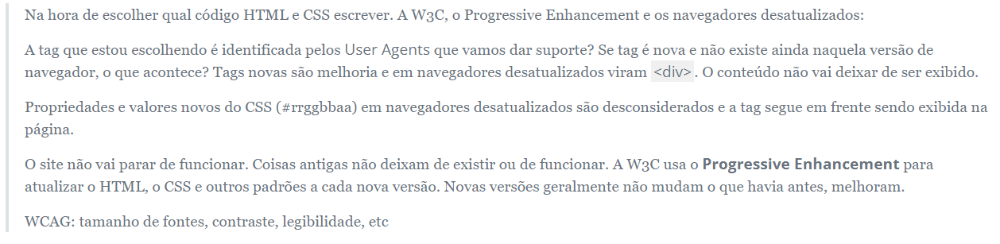

Pessoas diferentes vão usar nosso site em dispositivos diferentes dos que nós usamos para desenvolver, em lugares diferentes do que estamos e em condições muito diferentes das que nos desenvolvemos o site.
Condições, opções, limitações e restrições
Tamanho de tela.
Pessoas podem acessar nosso site de diversos dispositivos com tamanho de telas diferentes, por exemplo, celulares, TVs, tablets, notebooks...
Ausência de mouse e teclado.
Nem todos os dispositivos do mundo suportam um mouse e um teclado.
Pointer menos preciso: touchscreen.
Geralmente na ausência de um mouse, o toque se torna o ponteiro do dispositivo.
Navegadores diferentes e navegadores em versões diferentes
Navegadores desatualizados suportam menos tecnologias que navegadores mais novos, e diferentes navegadores mostram páginas de maneiras diferentes.
Tipos de conexões.
3G da TIM no túnel/metrô e TIM Fibra no Escritório da firma a 1 GB/s tem velocidades bem diferentes que impactam como a página pode ser mostrada.
Pessoas com Deficiências.
Algumas pessoas podem ter dificuldades para acessar nosso site como problemas de visão: cegueira, miopia, visão embaçada; motora: incapacidade de usar um mouse, controle motor com limitações; audição: surdez.
Pessoas usando o site em situações diferentes.
No metrô ou ônibus lotado e pessoas sentadas no escritório da firma ou em casa.
O que isso significa pra quem está desenvolvendo o site: definir e garantir que o site seja acessível nessas condições definidas. Como garantir isso? Testar em todas as situações e modificar o código sempre que o teste numa dada situação falhe.
Em relação a espaço de tela: analogia da caixa de fósforo vs caixa de sapato. O que cabe numa caixa de sapato cabe numa caixa de fósforo? e o contrário?
Devemos pensar e testar primeiro na base que é igual/mínima para todas as pessoas e depois "melhorar"/ adicionar código para situações onde caibam essas melhorias. Uma ordem de desenvovlimento, o porquê de cada passo e como testar:
Conteúdo. Conteúdo é o que todas as pessoas querem ver num site e começamos por ele.
Qual tipo de conteúdo a página vai ter? Como o conteúdo vai ser agrupado? Onde vai cada conteúdo? Qual a quantidade de conteúdo em cada lugar?
Teste: revisão de conteúdo, ortografia e etc.
Semântica com HTML. Semântica é uma melhoria em cima do conteúdo sem nenhuma marcação.
Como se localizar entre 1000 linhas de conteúdo para marcar e dar manutenção nesse conteúdo?
Teste: a tag escolhida (ex: <footer>) melhora a localização do código e a legibilidade para quem está desenvolvendo?
Como usar o site sem acesso ao visual dele? Muitas pessoas dependem só do conteúdo para navegar no site. Essas pessoas usam leitores de tela que interpretam a página e deixam ela acessível e navegável de uma maneira similar à forma que quem desenvolve o código se localiza no código (pelas tags).
Leitores de tela permitem que uma pessoa leia diretamente o conteúdo do <footer> ao invés de ler todo o conteúdo da página do início até o fim para chegar no conteúdo do <footer>.
Teste: definir casos de uso, abrir e usar o site de acordo em um leitor de tela
Outro teste: programas que exibem a árvore de acessibilidade (ex: Dev Tools do Firefox)
CSS. Estilos farão o conteúdo ser exibido de uma maneira melhor. O foco ainda é o conteúdo, então estilos são o terceiro passo, uma melhoria.
Um estilo deve melhorar e manter o conteúdo sempre acessível em qualquer situação.
Recomendamos começar limitando a largura e/ou a altura do viewport. Isso incentivará que CSS não impeça o acesso ao conteúdo em telas menores e o conteúdo que está numa tela menor acaba sendo acessível em telas maiores (por mais que as vezes seja feio). diversas versões de navegadores.
CSS sem limitação de tamanhos já é super responsivo! Quem pode deixar um site não responsivo é o CSS de quem está desenvolvendo o site.
